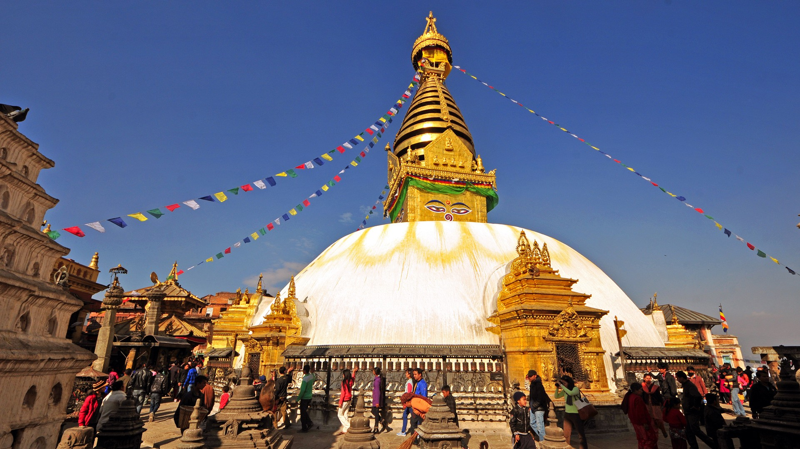

Swaymbhunath northwest of Kathmandu Valley.
SWAYAMBHUNATH
Find peace and prayers on the little hillock ofSwaymbhunath northwest of Kathmandu Valley.
Find peace and prayers on the little hillock of Swaymbhunath in the northwest of the Kathmandu Valley. Also known as the "Monkey Temple" among visitors from abroad, Swayambhunath sits atop its hill, overlooking most parts of the valley. This is a good place to catch panoramic views of the city. The site itself has stood as a hallmark of faith and harmony for centuries. The glory of Kathmandu Valley is said to have started from this point. Resting on a hillock 3 km west of Kathmandu, Swayambhunath is one of the holiest Buddhist Chaityas in Nepal. It is said to have evolved spontaneously when the valley was created out of a primordial lake more than 2,000 years ago. This stupa is the oldest of its kind in Nepal and has numerous shrines and monasteries on its premises. Swayambhu literally means "self-existent one". According to translations from an inscription dating back to 460 A.D., it was built by King Manadeva and by the 13th century, Swayambhunath had developed into an important center of Buddhism.Legend has it that Swayambhu was born out of a lotus flower that bloomed in the middle of a lake that once spread across the Kathmandu Valley once was. The largest image of the Sakyamuni Buddha in Nepal sits on a pedestal on the western boundary of Swayambhu. Behind the hilltop is a temple dedicated to Manjusri or Saraswati - the Goddess of learning. Chaityas, statues and shrines of Buddhist and Hindu deities fill the stupa complex. The base of the hill is almost entirely surrounded by prayer wheels that were recently installed. Devotees can be seen circumambulating the stupa at all times.The stupa sits atop the hill and the exceedingly steep stone steps leading up to the shrine is quite a challenge. However, there is also a road going up almost to the top and you can drive up. A large number of Buddhists and Hindus alike visit Swayambhunath through out the day. Swayambhu is perhaps the best place to observe religious harmony in Nepal.
 Some important monuments to see in this
Some important monuments to see in this
area
The huge gold plated Vajra ‘thunderbolt’ set in the east side of the stupa
Buddha statue on the west side of Swayambhu
The Sleeping Buddha
The Dewa Dharma Monastery, noted for a bronze icon of Buddha and traditional Tibetan paintings
The temple dedicated to Harati, the goddess of all children. It is said that she was an ogress
before Lord Buddha converted her to be the caretaker of all children.
Some important monuments to see in thisarea
before Lord Buddha converted her to be the caretaker of all children.